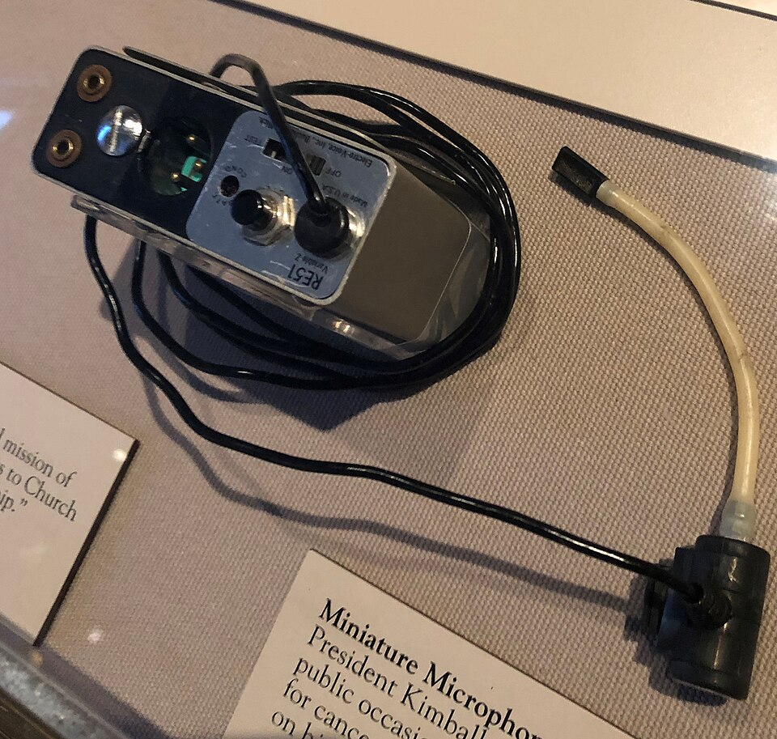
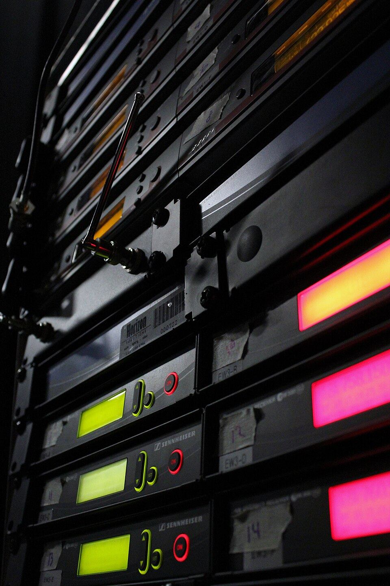

📡 Wireless Mics & RF Coordination
A wireless mic is a tiny radio station. Put eight of them on one stage and they can wreck each other, even when every one is on its own channel. Learn why, then place up to eight mics in the spectrum without a single collision.
1 · The link is just a radio wave
The bodypack turns your voice into a radio signal on a carrier frequency. The receiver tunes to that one frequency and turns the wave back into audio. Frequency and wavelength are tied together by the speed of light:
An antenna works best when it is about a quarter of a wavelength long. That's why a bodypack's little whip is only about 15 cm: it is tuned to UHF.
Wireless mics are FM or digital radio. Your voice rides on the carrier, but the carrier's frequency is what you set and what other mics must avoid.
Wavelength calculator
UHF mics live in the TV band. Each US TV channel is 6 MHz wide, and channels 14–36 cover 470–608 MHz.
2 · The 8-mic coordinator
Each teal bar is a mic's carrier. Every orange tick is a third-order intermodulation product the carriers create when they mix inside a receiver (more on that below). If a tick lands inside a mic's channel, that mic hears hiss, bursts or dropouts, and the bar turns red. Drag a bar, use the arrow keys, or press Auto-coordinate.
The TV lineups are made up for practice. A real venue uses the FCC's lookup or the maker's planning software (such as Shure Wireless Workbench) with the real stations in its area.
3 · Why different channels still collide
A receiver's first amplifier isn't perfectly straight. Real circuits bend signals slightly, so the output includes a cubic term: y = a₁x + a₂x² + a₃x³. Feed in two carriers at f₁ and f₂ and the cubic term makes new frequencies you never transmitted:
Example: mics on 501.0 and 500.5 MHz make 2(501.0) − 500.5 = 501.5 MHz. If a third mic is parked on 501.5, it is now being jammed by its neighbours. Evenly spaced channels are the worst plan, because every product lands exactly on the next carrier.
Same maths as audio distortion: clip a signal and its harmonics appear; play two tones into a clipping preamp and intermod shows up there too (see gain staging and the Fourier series lesson).
The problem grows faster than the rig
4 · The cleanest layout is a Golomb ruler
A product 2f₁ − f₂ hits a carrier f₃ only when f₁ − f₃ = f₃ − f₂, two gaps that are equal. A three-carrier product f₁ + f₂ − f₃ hits f₄ only when two pairs of carriers have the same sum, which again means two equal gaps. So the perfect plan is a set of frequencies in which every gap between any two mics is different. Mathematicians call that a Golomb ruler.
Shortest possible rulers have known lengths. Multiply each by your receiver clearance to get the minimum spectrum an ideal plan needs. Change the clearance slider above and the table follows.
| Mics | Marks (× clearance) | Min. span | TV channels |
|---|
Real coordination is messier: it also checks 5th-order products, intermod made between transmitters, and each receiver's measured selectivity. But the ruler idea is why 8 mics need more than the "8 slots" you'd count by eye: the span grows roughly with the square of the mic count.
5 · Where the antennas go
Frequency planning gets the channels right. Antenna placement keeps the signal strong enough to use them. At UHF the wave is blocked by people, scenery and metal, so give each receiver antenna a clear line of sight to the stage.
Diversity receivers
Each receiver has two antennas and always uses the one with the stronger signal. A radio wave bounces off walls and meets itself, so at some spots the signal cancels out. That is a dropout, and a second antenna a few wavelengths away is rarely in the same dead spot.
Share the antennas
Eight receivers don't need sixteen antennas on the wall. An antenna distribution box splits two good antennas to every receiver, so every mic hears the same strong signal and the rack stays tidy.
📷 Meet the real gear
Click a photo to enlarge it. Find the mic's end of the radio link, then the receiver's end.

